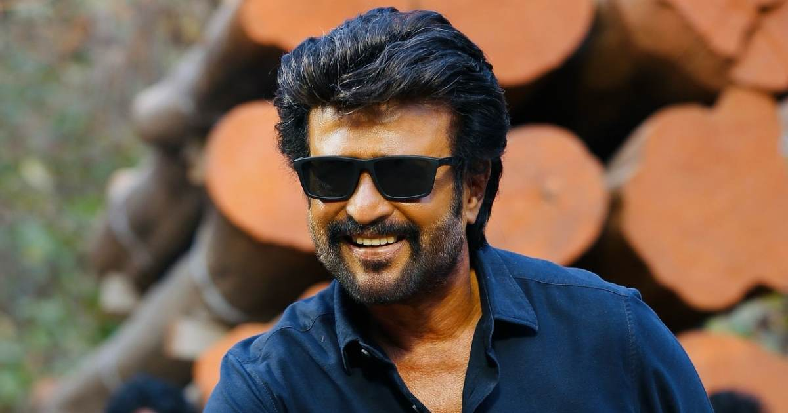

Shivaji Rao Gaikwad[a][4] (born 12 December 1950), known professionally as Rajinikanth,[b] is an Indian actor who predominantly works in Tamil cinema.[6] In a career spanning over five decades, he has done 170 films[c] that includes films in Tamil, Hindi, Telugu, Kannada, Bangla, and Malayalam